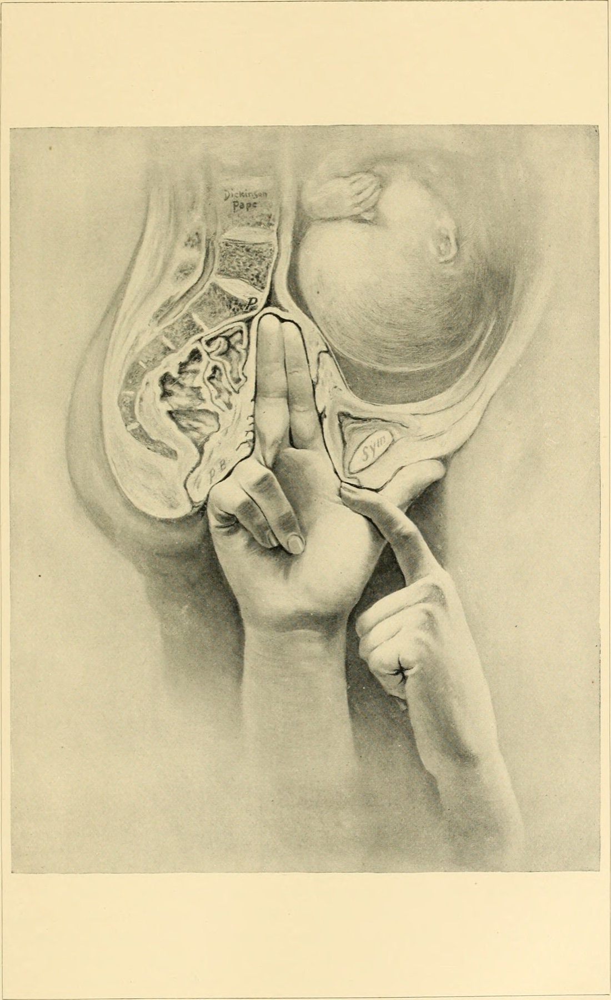

Página 11 · Parte A · Paredes
Mede-se o que se alcança, desconta-se o osso, sobra o que o feto tem
Uma figura mostra o examinador com os dedos dentro do canal, o indicador estendido alcançando um ponto lá atrás, na parede posterior. A pergunta: qual estreito e qual diâmetro estão sendo avaliados nessa manobra?
Questão de banca · origem sem banca/ano confirmado quando aplicável.
Uma figura, um dedo que alcança um ponto, e uma pergunta
Comece pela leitura da imagem, porque ela já entrega metade da resposta: na figura, o examinador está conseguindo alcançar o ponto que quer medir. Os dedos entram pela vagina, sobem pela parede de trás e a ponta do indicador toca um ressalto — o promontório sacral. Do outro lado, o dedo encosta na borda de baixo da sínfise púbica. A manobra mede a distância entre esses dois pontos.
O que está sendo medido é a conjugata diagonalis — é ela que o dedo alcança. E ela faz parte do estreito superior, o aro da entrada. Guarde os dois elementos da resposta: estreito superior e conjugata. O restante da página explica por que essa medida, sozinha, ainda não é a que interessa.
Conjugata é qualquer diâmetro de frente para trás da entrada
Conjugata é o nome de qualquer diâmetro ântero-posterior do estreito superior. São três na entrada — mais uma na saída, que leva o nome por analogia — e a diferença entre elas é onde encostam na sínfise, porque atrás todas partem do mesmo ponto: o promontório.
Todas começam no mesmo lugar; o que muda é onde terminam
Esta é a chave que transforma quatro nomes numa única ideia:
> As três conjugatas do estreito superior começam todas no promontório. O que muda é onde elas terminam na sínfise púbica: na borda de cima, na face de dentro, ou na borda de baixo. A sínfise é um osso com espessura — e é essa espessura que produz três números diferentes para o que parece ser a mesma medida.
Com isso, a tabela deixa de ser lista e vira geometria:
| Conjugata | De onde → até onde | Valor | Dá para medir? | |---|---|---|---| | vera anatômica | promontório → borda SUPERIOR da sínfise | ≈ 11 cm | ❌ não | | vera OBSTÉTRICA ⭐ | promontório → face INTERNA da sínfise, no ponto mais saliente (cerca de 1 cm abaixo da borda superior) | ≈ 10,5 cm | ❌ não | | DIAGONALIS ⭐ | promontório → borda INFERIOR da sínfise | ≈ 12 cm | ✅ sim, ao toque vaginal | | exitus | ponta do cóccix → borda inferior da sínfise — ⚠️ é do estreito INFERIOR | ≈ 9,5 cm → 11–12 cm com retropulsão | ✅ sim |
Repare no padrão: quanto mais baixo o ponto de chegada na sínfise, maior o número — porque a sínfise se inclina para a frente e para baixo, afastando-se do promontório. Anatômica 11, obstétrica 10,5, diagonalis 12: a obstétrica é a menor das três porque é a que encosta no ponto que mais avança para dentro do canal.
⚠️ Um aviso que poupa erro: circulam resumos que fundem "conjugata vera anatômica" e "diagonalis" num termo só, atribuindo 11 cm à medida que vai até a borda inferior. Está errado, e contradiz as fontes de referência. As duas terminam em bordas diferentes da sínfise e diferem em cerca de 1 cm.
Por que se subtrai 1,5 cm
A conta, conhecida como regra de Smellie:
> Conjugata obstétrica = conjugata diagonalis − 1,5 cm > Exemplo: diagonalis medida ao toque = 12 cm → obstétrica estimada = 10,5 cm → estreito superior adequado.
E agora o passo que a fórmula sozinha não entrega — e sem o qual o 1,5 é um número decorado que se inverte na primeira distração:
> O dedo que entra pela vagina alcança o promontório, atrás. Mas na frente ele só consegue encostar na borda de baixo da sínfise — o osso está no caminho, e não há como o dedo contorná-lo por dentro. Então mede-se o que dá: do promontório à borda inferior, que é a diagonalis. > Só que o feto não passa por ali. O feto passa pelo ponto mais saliente da face interna da sínfise, que fica mais para cima e mais para dentro — e esse é o trecho mais curto, a obstétrica. Como não dá para medi-lo, desconta-se a diferença: 1,5 cm, que corresponde à espessura e à inclinação do osso que o dedo não conseguiu atravessar. > Mede-se o que se alcança; desconta-se o osso; sobra o que o feto tem.
Quem entende isso nunca mais soma quando deveria subtrair — porque a direção da conta passa a ser óbvia: o que o feto tem é sempre menos do que o dedo alcançou. Vale registrar que parte da literatura internacional usa 1,5 a 2 cm, porque o desconto depende da altura e da inclinação da sínfise daquela paciente. O valor de trabalho e o cobrado em banca brasileira é 1,5 cm.
A que se mede e a que decide
A conjugata obstétrica é o menor diâmetro ântero-posterior do estreito superior: é o espaço real que a cabeça atravessa na entrada do canal, e é ela que decide se os mecanismos do parto vão poder acontecer. A frase que sintetiza: a diagonalis é a que se mede; a obstétrica é a que decide.
Com isso, a questão que abriu tudo se responde sozinha: está-se diante do estreito superior, e a manobra da figura faz, de forma indireta, a avaliação da conjugata obstétrica — medindo a diagonalis e descontando. Repare no que mudou: a mesma figura que era indecifrável agora se lê em duas etapas — que ponto o dedo alcançou e o que se faz com esse número.
O sinal que a banca adora: não alcançar o promontório é bom
E há um detalhe do exame que é ouro de prova e inverte a intuição: numa pelve adequada, o promontório NÃO é alcançável ao toque. O dedo simplesmente não chega lá, porque a distância é maior do que o comprimento do dedo. Promontório alcançável significa estreito superior possivelmente reduzido — e é aí que a conta da diagonalis passa a valer.
Ou seja: a manobra da figura só produz número quando há motivo de preocupação. Não alcançar o promontório é um bom sinal.
Informe a conjugata diagonal medida (cm).
Fórmula: vera obstétrica ≈ diagonal − 1,5 cm. Não diagnostica paciente.

Examinador alcança o promontório; medida da conjugata diagonal.
Norris, 1897 — prancha histórica em domínio público.
Quiz — fixação
Ao toque vaginal, a conjugata diagonalis foi aferida em 11,5 cm. Qual é a conjugata obstétrica estimada, e por que ela é a medida que importa?
- Gabarito B. 11,5 − 1,5 = 10 cm. E a razão da subtração é o que sustenta a resposta: o dedo mede até a borda inferior da sínfise, porque é até onde ele chega; o feto passa pela face interna, que fica mais para cima e mais para dentro — um trecho mais curto. Desconta-se a espessura e a inclinação do osso que o dedo não pôde atravessar.
- (A) inverte o sentido da conta, que é o erro mais frequente do assunto: some-se e obtém-se um espaço que não existe, com o risco clínico de superestimar a bacia.
- (C) confunde qual conjugata é mensurável — a diagonalis é a única aferível ao toque, e a obstétrica é sempre estimada; nenhuma medida direta entrega a obstétrica.
- (D) usa 2 cm, que aparece em parte da literatura internacional como faixa (1,5–2 cm) justamente porque o desconto depende da sínfise daquela paciente — mas o valor de trabalho e o cobrado em banca brasileira é 1,5 cm.
- Por que cair na (A): "conjugata obstétrica" soa como a medida "principal", e principal se associa a maior. É o oposto: ela é a menor das três da entrada, e é por ser a menor que decide.
Durante o toque vaginal de avaliação da bacia, o examinador não consegue alcançar o promontório sacral. Como interpretar esse achado?
- Gabarito B. É um dos poucos achados em que a ausência de resultado é o resultado. Numa entrada de dimensões adequadas, a distância do introito ao promontório supera o alcance do dedo do examinador — logo, não alcançar é bom. A manobra de medida da diagonalis só entra em cena quando o promontório é alcançado, isto é, quando há suspeita de que a entrada esteja reduzida.
- (A) trata a impossibilidade de medir como falha do exame, quando ela é informação clínica positiva.
- (C) inverte exatamente o sinal: alcançar é que levanta suspeita de estreitamento.
- (D) é invenção sem base — a versão uterina não desloca osso, e o promontório é referência esquelética fixa.
- Por que cair na (C): existe um viés forte a favor de "conseguir fazer o exame = exame normal", e "não alcancei" soa a limitação. A régua aqui é contraintuitiva e vale ponto: numa bacia boa, o dedo não chega lá.
Qual das conjugatas do estreito superior é aferível diretamente ao exame, e qual é o seu ponto de chegada anterior?
- Gabarito C. A diagonalis vai do promontório à borda inferior da sínfise, e é a única das três que o dedo consegue percorrer inteira — porque a borda inferior é o único ponto da sínfise ao alcance do examinador por dentro.
- (A) é a que decide, e justamente por isso é a mais importante — mas ela termina na face interna da sínfise, um ponto que o dedo não contorna; ela é sempre estimada, nunca medida.
- (B) termina na borda superior, ainda mais inacessível; é medida de referência anatômica, sem uso clínico direto ao exame.
- (D) troca de estreito: a exitus pertence à saída (cóccix → borda inferior da sínfise), e não à entrada — apesar de compartilhar com a diagonalis o ponto de chegada anterior.
- Por que cair na (A): ela é a que todo mundo lembra, porque é a que importa. A separação que resolve: a obstétrica é a que decide; a diagonalis é a que se mede — e a conta existe precisamente porque as duas não são a mesma.